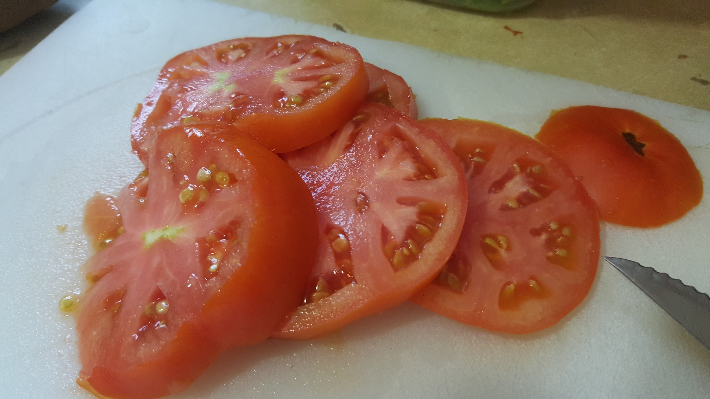
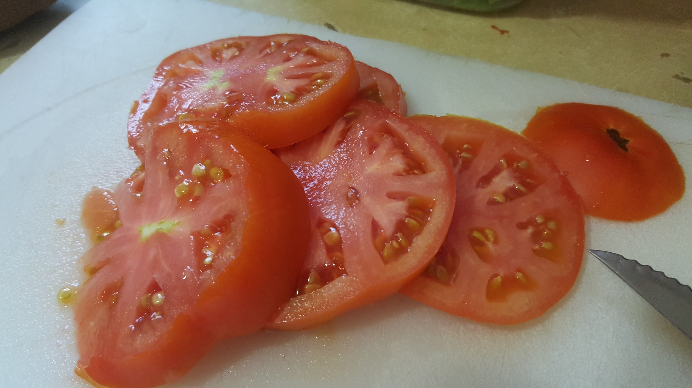

Titile
Beyond my professional life, I have developed a deep passion for hydroponic farming, where I grow food using in my back yard. This method allows me to cultivate a variety of plants in a controlled environment, optimizing resources and minimizing waste. It's truly fascinating to witness the plants thriving without soil, as I experiment with different nutrient solutions and lighting setups to maximize their growth potential. Simultaneously, I am dedicated to improving my English language skills. I believe that effective communication is crucial for personal and professional growth. I eagerly engage in various activities to expand my vocabulary. Reading books, watching movies, and participating in language exchange programs have been invaluable in broadening my understanding of the English language. Moreover, I have a keen interest in immersing myself in American culture and understanding the principles of "Free Enterprise”.

 
